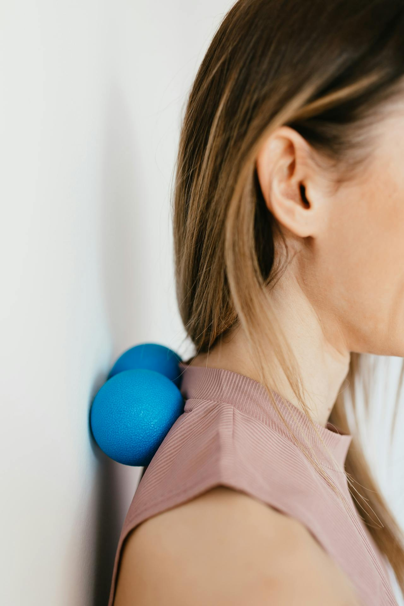

Praca zdalna, wielogodzinne sesje przed komputerem, mało ruchu – dzisiaj szczególnie zdrowie naszego kręgosłupa jest wystawione na ciężką próbę. A tymczasem warto zmienić niektóre ze swoich przyzwyczajeń oraz… mebli, aby poprawić samopoczucie, zadbać o potrzeby ciała i prawidłową postawę.
W obliczu tego wybór odpowiedniego krzesła to nie fanaberia, ale inwestycja. Ergonomiczne miejsce pracy chroni, wspiera i pozwala działać z maksymalną wydajnością przez cały dzień.
W tym artykule przyjrzymy się, dlaczego tak często cierpimy na ból pleców, jaki związek z tą dolegliwością ma nieprawidłowa pozycja ciała podczas pracy, jakie cechy powinno mieć dobre krzesło oraz jak dopasować je do swoich indywidualnych potrzeb.

Dlaczego bolą nas plecy podczas pracy siedzącej?
Praca siedząca, choć z pozoru komfortowa, może być cichym zabójcą naszego kręgosłupa. Wielogodzinne siedzenie w jednej pozycji obciąża mięśnie grzbietu, powoduje napięcia i z czasem prowadzi do deformacji postawy. Dodatkowo brak ruchu powoduje zastój w układzie limfatycznym i utrudnia dotlenienie organizmu. W dłuższej perspektywie może to prowadzić do poważnych schorzeń ortopedycznych i neurologicznych.
Skutki długotrwałego siedzenia
Nieprawidłowe siedzenie to nie tylko ból pleców. Długotrwała pozycja siedząca powoduje:
- - pogorszenie krążenia krwi,
- - zwiększone ryzyko chorób układu sercowo-naczyniowego,
- - napięcia i przykurcze mięśni,
- - problemy z koncentracją i ogólną wydajnością.
Z czasem może dojść także do pogorszenia funkcji oddechowych i trawiennych. Brak ruchu obniża ogólną odporność organizmu i wpływa na nastrój.
Najczęstsze błędy w ustawieniu stanowiska pracy
Wielu z nas nie zdaje sobie sprawy, że:
- - ekran monitora znajduje się zbyt nisko lub za wysoko,
- - siedzisko krzesła jest za wysokie lub zbyt głębokie,
- - brak podparcia lędźwiowego prowadzi do garbienia się,
- - stopy nie dotykają podłogi, przez co nogi są nienaturalnie ugięte.
Te z pozoru drobne błędy mają ogromny wpływ na zdrowie kręgosłupa. Mogą powodować chroniczne bóle i skutkować absencją w pracy.
Czym objawia się ból spowodowany złym krzesłem?
Objawy mogą być różne, ale najczęstsze z nich to:
- - ból w odcinku lędźwiowym i piersiowym,
- - uczucie sztywności w karku i ramionach,
- - ból głowy,
- - drętwienie i mrowienie w nogach,
- - drętwienie i mrowienie w rękach,
- - chroniczne zmęczenie nawet po odpoczynku.
Często te symptomy są bagatelizowane, co prowadzi do ich nasilania się. W dłuższej perspektywie mogą wymagać interwencji medycznej.
Jakie cechy powinno mieć ergonomiczne krzesło do pracy?
Ergonomia to nie luksus, to konieczność. Dobre krzesło powinno wspierać naturalną krzywiznę kręgosłupa i umożliwiać indywidualne dostosowanie. Ergonomiczne siedzisko nie tylko poprawia komfort, ale realnie wpływa na efektywność pracy. Redukuje zmęczenie i pozwala skupić się na obowiązkach.

Regulacja wysokości i głębokości siedziska
Umożliwia dopasowanie do wzrostu i długości ud. Stopy powinny stabilnie spoczywać na podłodze, a kolana tworzyć kąt prosty. Dobrze dobrana głębokość siedziska zapobiega uciskowi na tylną część ud. To z kolei poprawia krążenie i zapobiega drętwieniu nóg.
Podparcie lędźwiowe – dlaczego jest tak ważne?
Odcinek lędźwiowy potrzebuje aktywnego podparcia, by zapobiegać "zapadaniu się" sylwetki. Poduszka lędźwiowa to mały element, a robi wielką różnicę. Wspomaga utrzymanie prawidłowej postawy i zmniejsza napięcie mięśniowe. Pomaga również w walce z bólem przewlekłym.
Oparcie i jego dopasowanie do kręgosłupa
Najlepiej, gdy oparcie dopasowuje się do kształtu pleców użytkownika, nie odwrotnie. Dobrze, by było elastyczne, ale stabilne. Elastyczne oparcie pozwala na ruch i naturalne zmiany pozycji. Dzięki temu nie dochodzi do sztywności mięśni.
Ruchomy mechanizm i funkcja bujania
Pozwala na aktywne siedzenie, co zapobiega zesztywnieniu mięśni. Dynamiczne podparcie dostosowuje się do ruchów ciała. Funkcja bujania pobudza mikrokrążenie i poprawia koncentrację. Ułatwia też utrzymanie zdrowej pozycji bez ciągłego napięcia.
Podłokietniki i zagłówek – kiedy są konieczne?
Podłokietniki odciążają barki, a zagłówek wspiera kark podczas odpoczynku lub dłuższego patrzenia na ekran. Warto je mieć, ale powinny być regulowane. Brak tych elementów może powodować napięcia w barkach i szyi. Ich obecność poprawia komfort i wydłuża czas efektywnej pracy.
Krzesło biurowe a krzesło ergonomiczne – czym się różnią?
Standardowe krzesła biurowe często oferują tylko podstawową regulację i wyglądają profesjonalnie, ale niekoniecznie są zdrowe. Ergonomiczne krzesła stawiają na funkcjonalność i zdrowie użytkownika. Są projektowane z myślą o długiej pracy w pozycji siedzącej. Inwestycja w ergonomię szybko się zwraca – zdrowiem i produktywnością.
Krzesło biurowe a krzesło ergonomiczne – czym się różnią?
Standardowe krzesła biurowe często oferują tylko podstawową regulację i wyglądają profesjonalnie, ale niekoniecznie są zdrowe. Ergonomiczne krzesła stawiają na funkcjonalność i zdrowie użytkownika. Są projektowane z myślą o długiej pracy w pozycji siedzącej. Inwestycja w ergonomię szybko się zwraca – zdrowiem i produktywnością.
Jak dopasować krzesło do swojego wzrostu i sylwetki?
Siedzisko powinno znajdować się na takiej wysokości, by stopy całkowicie spoczywały na podłodze, a kolana były na linii bioder lub nieco niżej. Dzięki temu unikamy nadmiernego napięcia w udach. Odpowiednia wysokość poprawia komfort i wspiera ergonomiczne ustawienie ciała. Redukuje ryzyko powstawania żylaków i obrzęków.
Jak prawidłowo ustawić wysokość siedziska?
Najlepiej, gdy oparcie dopasowuje się do kształtu pleców użytkownika, nie odwrotnie. Dobrze, by było elastyczne, ale stabilne. Elastyczne oparcie pozwala na ruch i naturalne zmiany pozycji. Dzięki temu nie dochodzi do sztywności mięśni.
Jak dobrać oparcie do kształtu pleców?
Nie każdy kręgosłup jest identyczny. Najlepsze krzesła ergonomiczne mają regulowane oparcia, które można dopasować do naturalnej lordozy lędźwiowej. Dobrze dobrane oparcie wspiera prawidłowe ułożenie kręgów. Pomaga również w zapobieganiu przewlekłym dolegliwościom bólowym.
Czy istnieją krzesła uniwersalne?
Teoretycznie tak, ale w praktyce lepiej szukać modeli z maksymalną ilością regulacji. Wtedy jedno krzesło może pasować kilku osobom. Krzesła z szerokim zakresem regulacji są bardziej przyszłościowe. Sprawdzą się także w biurach dzielonych przez kilka osób.
Polecane modele krzeseł dla osób z bólem kręgosłupa
Krzesła dla pracowników biurowych
Dobry fotel nie musi kosztować małej fortuny – najważniejsze, aby pasował pod względem wymiarów i funkcji osobie, która będzie go użytkować. Fotele ergonomiczne są dedykowane do długotrwałego użytkowania i testowane pod kątem dopasowania do ciała – kręgosłupa, rąk. Często wyposażone są w dodatkowe systemy wentylacji siedziska. Ich jakość wykonania przekłada się na długowieczność.
Krzesła do pracy zdalnej i home office
Dla domowego biura sprawdzą się mniejsze modele z podłokietnikami i regulowanym oparciem. Zajmują mniej miejsca i często lepiej komponują się z domowym wnętrzem. Niektóre mają możliwość szybkiego składania lub przenoszenia. Są też zazwyczaj bardziej budżetowe.
Krzesła ortopedyczne – kiedy warto je rozważyć?
Gdy ból kręgosłupa jest przewlekły i uniemożliwia pracę, warto sięgnąć po specjalistyczne rozwiązania, czy krzesła z wymuszonym aktywnym siedzeniem. Takie modele angażują mięśnie posturalne, zmuszając ciało do mikroruchów. To rozwiązanie dla osób z poważnymi problemami zdrowotnymi. Często zalecane są przez fizjoterapeutów.
Czy krzesło to wszystko? – jak jeszcze zadbać o zdrowy kręgosłup w pracy?
Przerwy w pracy i mikroaktywność
Co godzinę warto wstać, przeciągnąć się, przejść kilka kroków. Mikroaktywność wspiera krążenie i zmniejsza napięcia. Działa też korzystnie na koncentrację i nastrój. To prosty sposób na wielką zmianę.
Ćwiczenia na ból kręgosłupa do wykonania przy biurku
Proste skłony, obroty tułowia, ściąganie łopatek – kilka minut dziennie może zdziałać cuda. Regularność ma tu kluczowe znaczenie. Nawet krótki trening potrafi zmniejszyć ból i poprawić postawę. Warto uczynić z tego nawyk.
Znaczenie odpowiedniego biurka i ustawienia monitora
Monitor powinien być na wysokości oczu, a biurko mieć odpowiednią głębokość i wysokość. Wysuwana szuflada na klawiaturę? Znakomity pomysł. Dobre ustawienie sprzętu zmniejsza obciążenie karku i nadgarstków. Praca staje się bardziej komfortowa i efektywna.
Chcąc przenieść ergonomię pracy na jeszcze wyższy poziom, warto rozważyć inwestycję w biurko z regulacją wysokości. Coraz częściej jest to mebel stawiamy w nowoczesnych biurach, ale także w domowych gabinetach. Dlaczego?
- - Praca naprzemiennie na siedząco i stojąco znacząco odciąża kręgosłup i pozwala utrzymać prawidłową postawę przez cały dzień.
- - Poprawa krążenia krwi, koncentracji oraz ogólnej wydolności organizmu przekłada się bezpośrednio na efektywność i komfort pracy.
- - Atrakcyjna dostępność cenowa – obecnie dobrej jakości biurka regulowane można znaleźć w bardzo przystępnych przedziałach cenowych.
- - Elastyczność bez konieczności dużych zmian – nawet podstawowe modele wprowadzają zauważalną różnicę w codziennej pracy.
Skoro ruch to fundament zdrowia, a biurko umożliwia dynamiczne zmiany pozycji w trakcie dnia, to wydaje się jednym z najlepszych kroków w stronę stworzenia ergonomicznego i nowoczesnego stanowiska pracy.
Podsumowanie – jakie krzesło najlepiej sprawdzi się przy pracy siedzącej?
Najlepsze krzesło to takie, które "rośnie/zmienia się z Tobą" – dopasowuje się do Ciebie, nie odwrotnie. Powinno oferować szeroką regulację, dobre podparcie lędźwiowe i zachęcać do ruchu.
Ergonomia to nie luksus, to inwestycja w zdrowie i komfort. Pamiętaj jednak: nawet najdroższy fotel nie zastąpi przerwy na rozprostowanie kości, sportu, a w uzasadnionych przypadkach również fizjoterapii.
Metody terapii


Rekomendacje
Co mówią o nas pacjenci